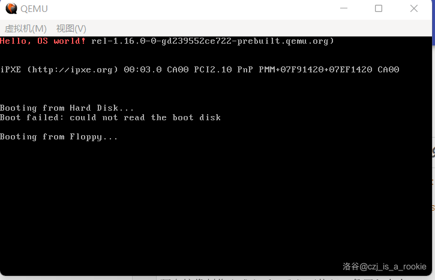

01 第一个引导扇区
所谓引导扇区，其实就是一段可执行的代码而已，不过加入了一个小限制：编译后的总字节数不能超过 512，同时扇区（一个 512 字节的连续区域，一般在磁盘里）最后两个字节必须是 0x55 0xAA 。
虽然现在看来这个限制并不怎样，但一到后面再回过头来，您将会发现这是一个非常恶心的限制。不过没关系，对于现在的我们来说，这个限制并不大。
那么我们的目标就是用一些功能往屏幕上输出信息。现在这个阶段，除了我们之外，还活着的也就一个 BIOS 了。万幸的是，BIOS 提供了显示字符串的方法，具体用法如下：
向下列寄存器中依次存入：
AH=013h，表示输出信息
BH=页码（一般可以置0）
BL=属性（当al=0或1时才有用）
CX=字符串长度
(DH, DL)：行和列
ES:BP：字符串地址
AL=输出方式
AL=0：仅含显示字符，字符属性（颜色等）位于 BL 中。显示后，光标位置不变。
AL=1：同 AL=0，但显示后光标位置改变。
AL=2：字符串中含有显示字符和显示属性。显示后，光标位置不变。
AL=3：同 AL=2，但显示后光标位置改变。
然后执行
int 10h。
寄存器可以近似理解为变量，这里面的 AH、BH、BL、DH、DL 这些都是寄存器。怎么操作它们呢？且看待会的代码。
这里面有个东西叫 ES，它与其他寄存器不同，它是段寄存器。至于段寄存器是什么， ES:BP 又是什么意思，且看下文说明。
那么此次我们要使用的就是 AH=13h AL=01h 的显示方法，即显示字符串后光标移动。
知道怎么显示字符串，主体部分的代码除了汇编的语法以外就没有理解障碍了。鉴于是第一段代码，我们还是来做一个阅读理解吧：
代码 1-1 最简单的引导扇区（boot.asm）
org 07c00h ; 告诉编译器程序将装载至0x7c00处
mov ax, cs
mov ds, ax
mov es, ax ; 将ds es设置为cs的值（因为此时字符串存在代码段内）
call DispStr ; 显示字符函数
jmp $ ; 死循环
DispStr:
mov ax, BootMessage
mov bp, ax ; es前面设置过了，所以此处的bp就是串地址
mov cx, 16 ; 字符串长度
mov ax, 01301h ; 显示模式
mov bx, 000ch ; 显示属性
mov dl, 0 ; 显示坐标（这里只设置列因为行固定是0）
int 10h ; 显示
ret
BootMessage: db "Hello, OS world!"
times 510 - ($ - $$) db 0
db 0x55, 0xaa ; 确保最后两个字节是0x55AA
汇编语言大小写不敏感，因此我们把所有的指令和寄存器都搞成了小写。汇编语言也不存在 main 函数，会从第一行开始顺次往下执行（当然如果遇到跳转会跳走，这个流程类似 Python），因此我们也一行一行的看。
第一行，org 07c00h，意义已经写在注释里，但是为什么要这么做？这是因为，按照硬件规程（这个词汇后面还会出现多次），BIOS 在执行完自检等一系列操作以后，将执行位于 0x7c00 处的代码。07c00h，与 0x7c00 同义；同理，0（管你是啥）h 和 0x（管你是啥） 也同义。这样，下面的代码才有被执行到的机会。由于它实际上不会产生任何机器码，因此它也被叫做伪指令。
下面的 mov ax, cs，可以近似理解为 ax = cs，这里的 ax 也是寄存器，cs 也是寄存器，但这两者并不尽相同：ax 被称为通用寄存器，顾名思义可以随便用；而 cs 则是段寄存器，段与内存有莫大的关系，如果乱动将导致内存操作不合预期，这个 cs 更是和 code 有关，乱动会导致执行出故障，因此除了某些必然更改的方法以外，它一般都是只读的。
接下来的两个 mov 本身，我想读者可以自己引申理解。这其中，ds 和 es 也是段寄存器。段与内存有什么关系呢？在刚刚进入引导扇区的实模式下，我们认为一个段管理 64KB 内存。如果某个段寄存器的数值是 x，那么从 x * 16 开始的 64KB 就归它管，x 本身则代表一个段。这样的寻址方法，用 段寄存器:寻址寄存器 来表示。或许有人就要问了：
唉，这不对啊，那两个段难道不会重合么？
好问题，两个段还真会重合。那么重合部分的内存归谁管呢？段寄存器里是哪个段，这个内存就归谁管。
至于这个寻址寄存器又是什么东西，由于我们不会在实模式待太久（我是不是听到了“还有其他模式？”），所以就先不解释了。
这里之所以要把 ds 和 es 用 cs 赋值，则又是因为这两者在 BIOS 执行期间可能还存着 BIOS 时期的段，如果不进行覆写，后面的 int 10h 会觉得我要从 BIOS 的某处取字符串，实际则应该从执行代码的某处读字符串，而后者是由 cs 进行表示的。
然后 call DispStr，这个可以近似理解为 DispStr();。至于具体发生了什么，由于本节教程（甚至可能一直到很后面的教程）都没有用到，所以先不解释，用到了再说。
最后这个 jmp $，相当于 while (1);。但是需要注意，jmp 并不是循环，它是一个跳转语句，和 goto 反而更为接近。$ 则表示这条指令的起始地址。这么一来，这条指令就相当于跳转到这条指令开始的位置，从而继续执行跳转，于是就起到了无限循环的作用。
然后是 DispStr:，它既可以表示 void DispStr()，也可以干脆作为 goto 的标签名，从后面的介绍还可以知道，它还能表示更多的意思，就先不说了。
下面 mov ax, BootMessage，相当于 ax = BootMessage。这个 BootMessage 又是从什么地方来的？仔细观察发现，原来就在下面，BootMessage: db "Hello, OS world!"。这个 db 也是个伪指令，作用是把后面的东西原样写进内存，不管它是一个数，一串数，或是一个字符串，只要它或它的每一个最小单元都在一个字节的范围内，就从头开始到最后，依次把这个数原样写在生成的文件里。大概相当于这样：
db 0x55, 0xaa -> char sth[] = {0x55, 0xaa};
db "Hello, OS World! -> char sth[] = "Hello, OS World!"
db 0x55 -> char sth[] = {0x55}
这个 db 其实也是一系列伪指令里的一个，还有 dw 和 dd，分别是把那个数组的类型改成了 short 和 int。再往上还有更大尺度的，但是我们用不到。
把一个 BootMessage: 加在 db 前面，就相当于把这一串数组的名字给搞成了 BootMessage。也就是说，
BootMessage: db "Hello, OS world!" 等价于 char BootMessage[] = "Hello, OS world!"
因此这个 mov 代表的意思，就相当于是把 BootMessage 对应的内存地址赋值给了 ax。
接下来 mov bp, ax，就是 bp = ax。或许有人要问：
那么为什么不直接
bp = BootMessage呢，转写成汇编就是mov bp, BootMessage？这样难道不是效率更高、指令更少吗？
这是因为，有的寄存器不能直接使用内存地址和数字（我们统称这俩为立即数，意思是可以立即知道数值的数）赋值，比如段寄存器。虽然 bp 不在此列，但为了保险的需要，还是使用 ax 进行中转。
接下来就是按照要求，依次对这些寄存器进行写入了。先是 mov cx, 16（cx = 16），这是手动计算的下面字符串的长度；然后 mov ax, 01301h（ax = 0x1301）、mov bx, 000ch（bx = 0x000c），再之后是 mov dl, 0 设置在第 0 列显示。由注释可知，这是因为我们默认此时的 dh 是 0 的缘故。神奇的事情发生了，我们好像并没有对 ah、al、bh、bl 赋值！这又是为什么呢？
如果您的观察比较敏锐，那么就会发现，ah 本该获得的 0x13，被放在了 ax 的高 8 位；al 本该获得的 0x01，被放在了 ax 的低 8 位。难道说……？
没错！ah 和 al，其实就代表了 ax 的高8位和低8位（这也是它们 h 和 l 的来源）。同理，bh、bl 对应 bx，ch、cl 对应 cx，dh、dl 对应 dx。其余的通用寄存器：di、si、sp 和 bp，没有对应的 h 和 l。
接下来的 int 10h，相当于在调用库函数，上面的 ah 什么的都是参数。如果硬要类比，可能类似于这样：
sort(v.begin(), v.end(), cmp);，int 10h 就类似 sort（只是角色，功能很不同），v.begin()、v.end()、cmp 作为参数则和那些寄存器类似（当然后面知道其实也很不同）。
最后的 ret，相当于 return ax;。这个返回值怎么处置，最终是由调用方说了算。
下面的 BootMessage 那一行已解释过，再往下比较有意思，times 510 - ($ - $$) db 0，这是在干什么，发刀乐么？
先说 times。times xxx aaa，相当于做 xxx 次 aaa。times 本身也就个伪指令。一般 times 都与 db 系列的伪指令配合使用，和其他的联合使用的，我是没见过例子。
下面的 $ 已经解释过，表示现在这个指令的起始内存地址，以此类推，其实伪指令的起始地址也可以用 $ 表示；$$ 则比较复杂，不过在这个语境下，可以默认它是 0。也就是说，写成 times 510 - $ db 0 也是没有问题的。
最后 db 0x55, 0xAA，是为了顺应硬件规程的需要，“扇区最后两个字节必须是 55 AA”。一个扇区一共 512 个字节，所以先把最后这一句一直到 510 字节填充成 0，然后写 55 AA，就能够保证这个二进制是一个符合硬件规程的扇区，从而能够被执行。
程序读完了，想必在这之前大家也写 抄 好了，我们该怎么运行呢？首先编译一下：
nasm boot.asm -o boot.bin
对于 Linux 和 macOS 用户而言，只需要下面两行命令就可以完成软盘映像的创建与写入：
dd if=/dev/zero of=a.img bs=512 count=2880
dd if=boot.bin of=a.img bs=512 count=1 conv=notrunc
如果您使用的是 Windows，那么需要执行 bximage。下面是使用 bximage 创建软盘映像的实例：
> bximage
========================================================================
bximage
Disk Image Creation Tool for Bochs
$Id: bximage.c,v 1.34 2009/04/14 09:45:22 sshwarts Exp $
========================================================================
Do you want to create a floppy disk image or a hard disk image?
Please type hd or fd. [hd] fd
Choose the size of floppy disk image to create, in megabytes.
Please type 0.16, 0.18, 0.32, 0.36, 0.72, 1.2, 1.44, 1.68, 1.72, or 2.88. [1.44]
I will create a floppy image with
heads=2
sectors per track=18
total sectors=2880
total bytes=1474560
What should I name the image? [a.img]
Writing: [] Done.
I wrote 1474560 bytes to a.img.
The following line should appear in your bochsrc:
floppya: image="a.img", status=inserted
(The line is stored in your windows clipborad, use CTRL-V to paste)
Press any key to continue
>
硬盘镜像制作完成之后，我们再执行一条写入命令：
dd if=boot.bin of=a.img bs=512 count=1
注意，Windows 下的 dd 不支持 conv 选项。
另外，如果您的 boot.bin 被报毒 KillMBR，请不要惊慌，因为它就是一个 MBR，因此被判为覆盖 MBR 的病毒非常正常，默认不做操作即可。
无论是上述哪种情况，在制作完成之后，直接执行一行命令来执行：
qemu-system-i386 -fda a.img
如果您的执行结果如下图，那么恭喜您，您的引导扇区成功执行了！

（图 1-1 运行结果）
无论您使用的是哪种虚拟机，只要左上角出现 Hello, OS world! 就算是成功。